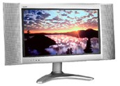
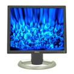

Plasma display devices have high resolution and are capable of displaying full HDTV and DTV signals as well as XGA, SVGA and VGA signals from a computer.
 LCD TV
Liquid crystal television monitors provide 16:9 wide-screen high definition picture quality. With a tuner, composite, and component video inputs the monitor can be used as either a TV or video monitor.
 Flat Screen Monitor
These monitors display sharp and brilliant images of text and graphics with a maximum resolution up to 1600x1200 pixels. Features include S-Video and Composite Video connectors for TV viewing as well as computer interface.